История космонавтики
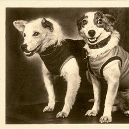
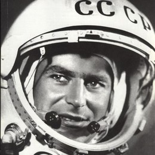
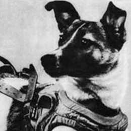
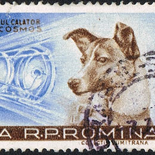
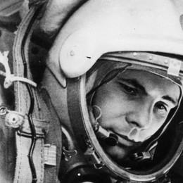
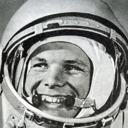
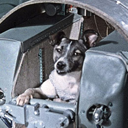
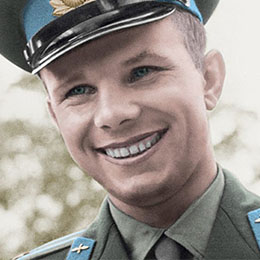
До того, как в космос был отправлен человек, космонавтами довелось побывать и другим
живым существам. Уже через месяц после запуска первого искусственного спутника
Земли,
3 ноября 1957 г. Советский Союзом был запущен Спутник-2 с живым существом на
борту. Первым космонавтом в мире стала бездомная собака прозванная учеными Лайкой.
Запуск производили с целью проверить возможность отправки живого организма на
орбиту, однако производился он без расчета на возвращение. Вопреки ожидаемых
нескольких дней, Лайка погибла уже через несколько часов полета от перегрева. Однако
смерть её не была напрасной, - ученые поняли, что живое существо способно выдержать
перегрузки при выходе в космическое пространство и состояние невесомости.
В память о Лайке в нескольких городах мира были установлены памятники первому
животному-космонавту.
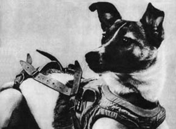
После неудачного запуска, в ходе которого погибли две испытуемых собаки Лисичка и Чайка, 19 августа 1960 г. состоялся запуск Белки и Стрелки. Совершив 24-часовой полет они благополучно вернулись на Землю. В космических испытаниях и впоследствии неоднократно участвовали собаки, но всё шло к тому, что скоро в космосе окажется и человек.
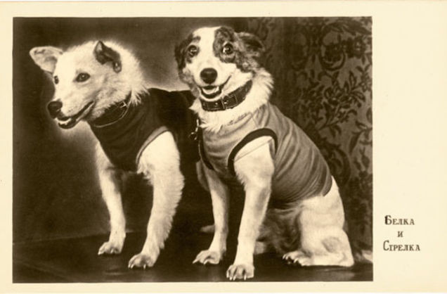
12 апреля 1961 года мир облетела новость о том, что состоялся первый полет человека в космос. Лицо и имя Юрия Гагарина с тех пор знали практически во всем мире. Запуск был осуществлен при помощи корабля Восток-1. Полет длился 108 минут и был управляемым, за это время корабль совершил один оборот вокруг Земли и начал снижение. Катапультировавшись на высоте 7 км Гагарин приземлился в Саратовской области, поблизости от села Смеловка. По приземлении Юрий Гагарин моментально станет мировой знаменитостью, и, несмотря на то, что он так больше никогда и не побывает в космосе, – одним из ключевых символов космической эры человечества.
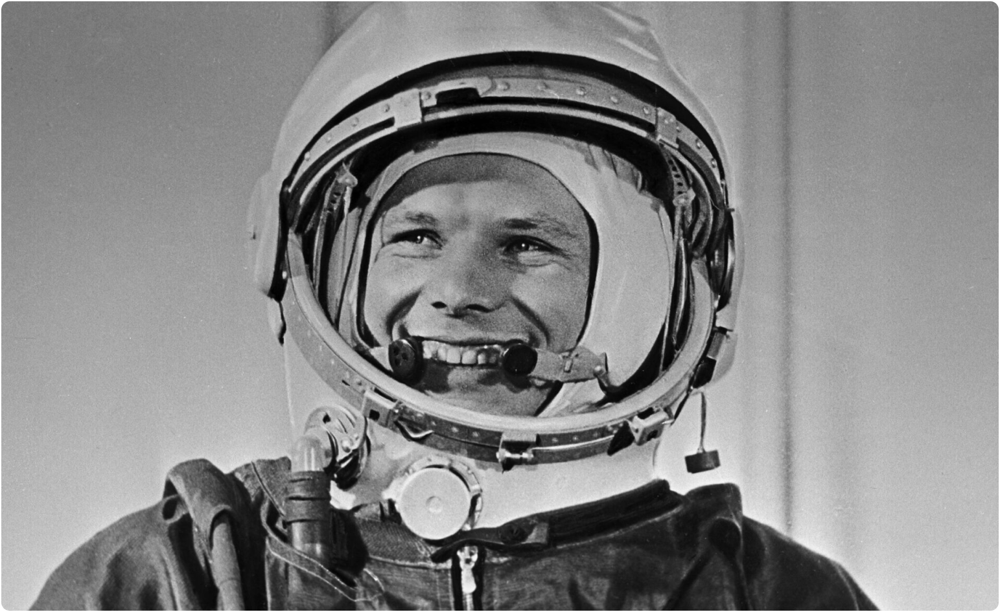
Вторым человеком в космосе станет дублер Гагарина – Герман Титов (полет 6 – 7 августа 1961 г.). Ему принадлежат такие рекорды как – самый молодой космонавт (его возраст на момент полета – 25 лет, в то время как Гагарину было 27), и первый продолжительный полет (1 сутки и 1 час). Примечание: в 2021 г. самым молодым человеком, побывавшим на орбите, стал космический турист Оливер Дамен, посетивший космос в возрасте 18 лет и пробывший там 10 минут.
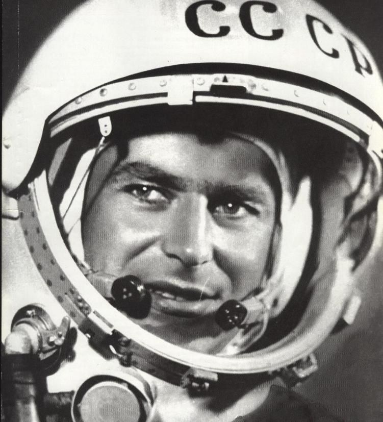